秩父御岳山
| 日付 | 2006年12月2日（土） |
|---|---|
| 山域 | 奥秩父 |
| メンバー | 単独 |
| 山行形態 | 日帰り |
| アクセス | 電車、バス |
| ルート (Map) | 強石→杉の峠→秩父御岳山→落合 |
12月に入り、登れる山も少なくなってきた。
今回は標高の低い秩父御岳山を選択。
8:47 秩父鉄道三峰口駅到着。
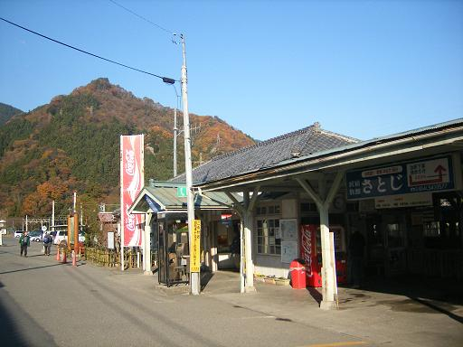
8:58 強石バス停到着。標高335m。登山開始。
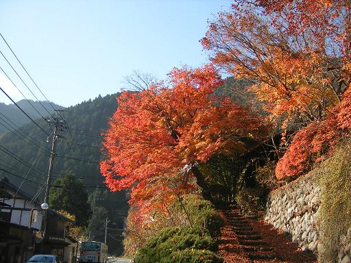
車道から登山道に入っていく。
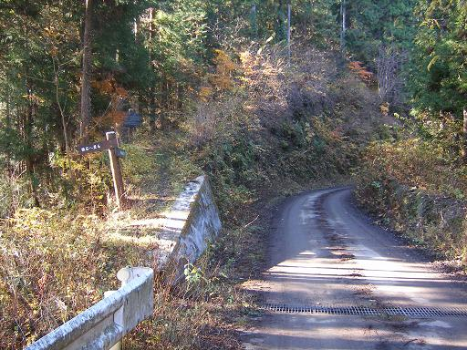
何があったの？
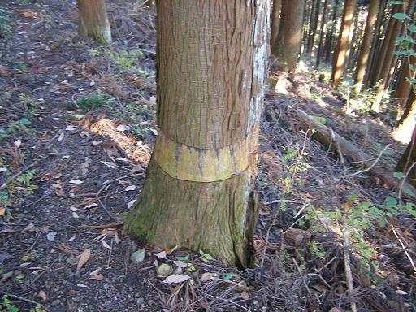
小屋の屋根が吹き飛ばされた跡。
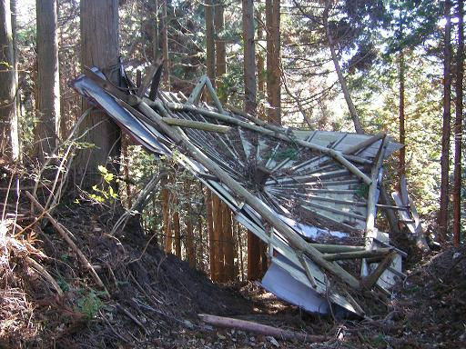
杉の峠到着。小さな石仏がある。
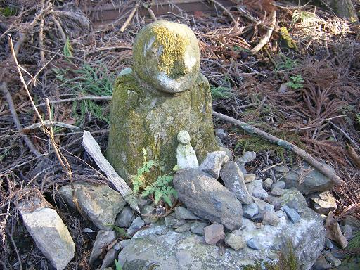
秩父御岳山の山頂が見えてきた。
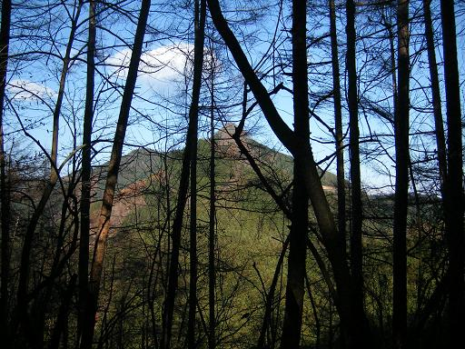
標高は低いが結構山は深い。
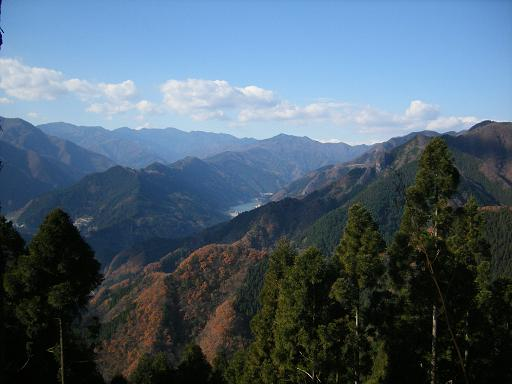
急な尾根道を登っていく。両側は断崖。
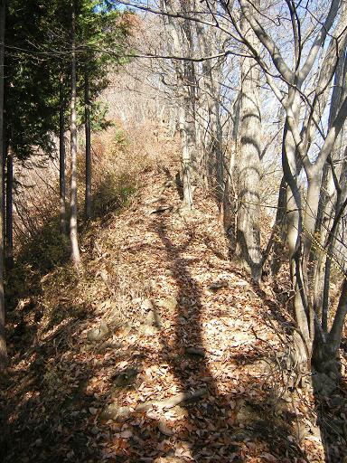
小規模な岩場。
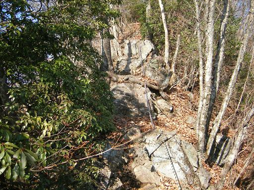
10:48 秩父御岳山山頂到着。標高1081m。
山頂部は比較的狭い。周りには誰もいない。
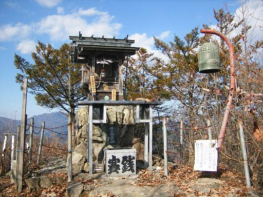
古びた方位盤。
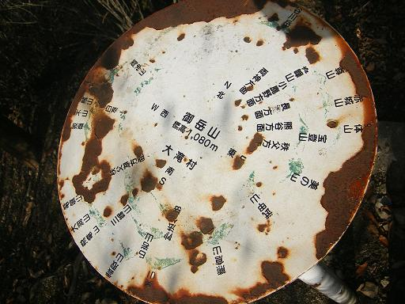
山頂からの眺め。昼食をとっていると、次々と人が到着。
11:22 山頂出発。
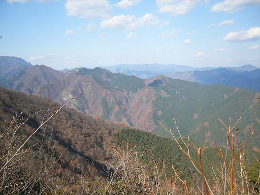
下りはひたすら杉林をジグザグに降りていく。
所々で登山者とすれ違う。
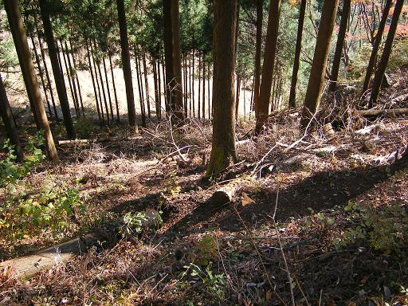
この橋を渡れと？
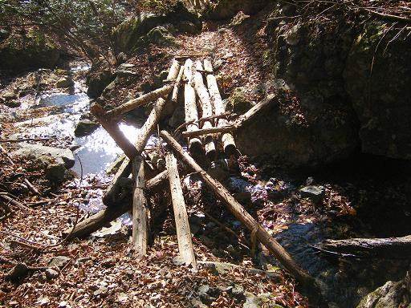
途中から沢を下っていく道になる。
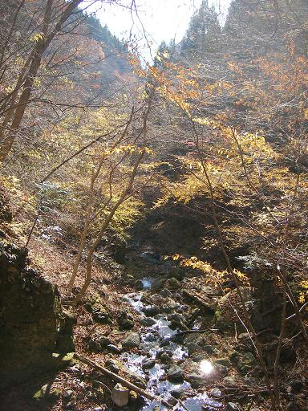
下山。登山道入口にある普寛神社。山頂にあったのは、この奥宮。
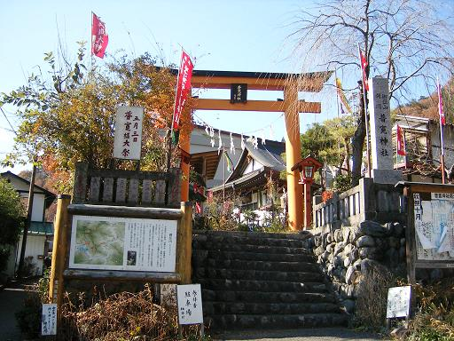
12:18 落合バス停到着。標高425m。
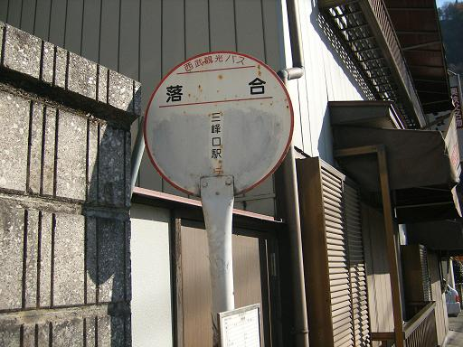
三峰口駅付近から。下に見えるのは荒川。
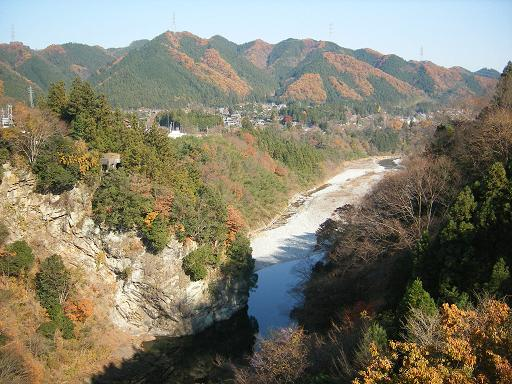
遠くに見えるのは武甲山。

紅葉がきれいなので、ぶらぶら歩き始める。
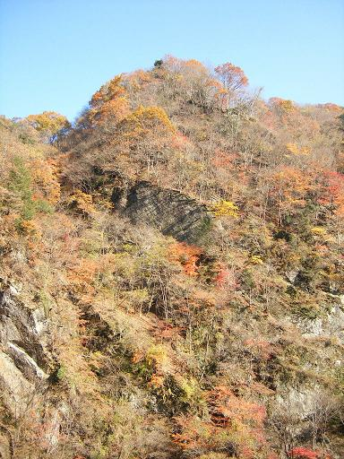
とんがった岩山。
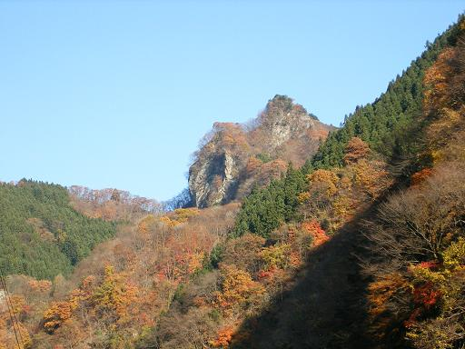
2週間前ならもっと見事だったかも。
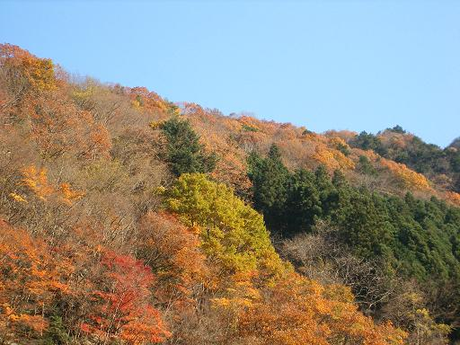
他の山行記録